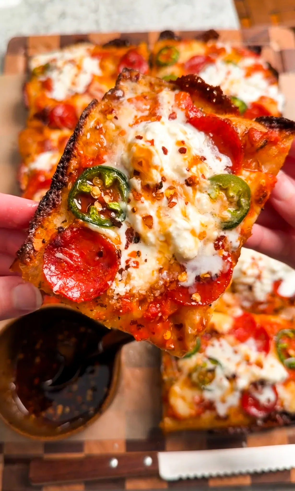
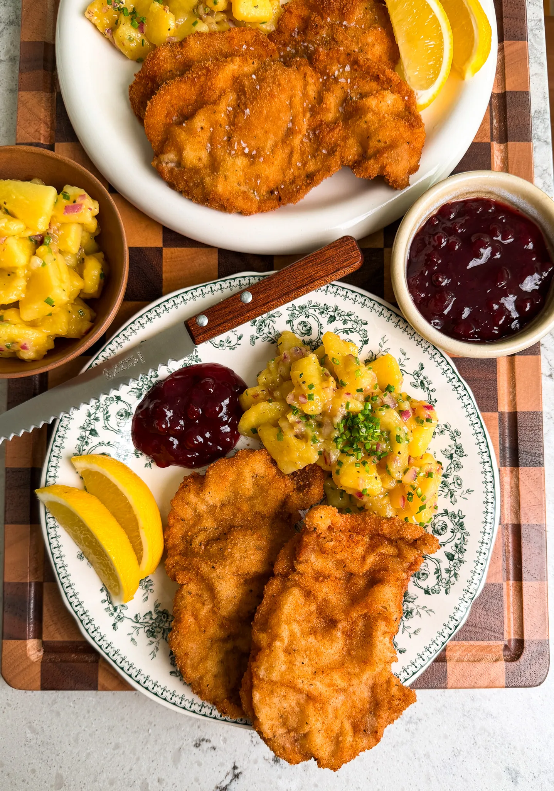

Dinner - Main Course
Detroit-Style Pizza
Prep time: 30 minutes (+ 3 hours prrofing time.) Cook time: 15 minutes. Total time: 3-4 hours. Yields: 8 slices.
Thick, airy, and perfectly crisp on the bottom, this Detroit-style pizza has those signature cheesy, caramelized edges with a soft, fluffy interior. The garlic butter brushed crust, creamy marinara layer, and crispy pepperoni bake into the dough for bold flavor in every bite. Finished with cool stracciatella and a drizzle of hot honey, it's sweet, savory, and just hits all the right notes.
You Might Also Like:

The Animal Style In-N-Out Baked Patato.

Egg Patties
